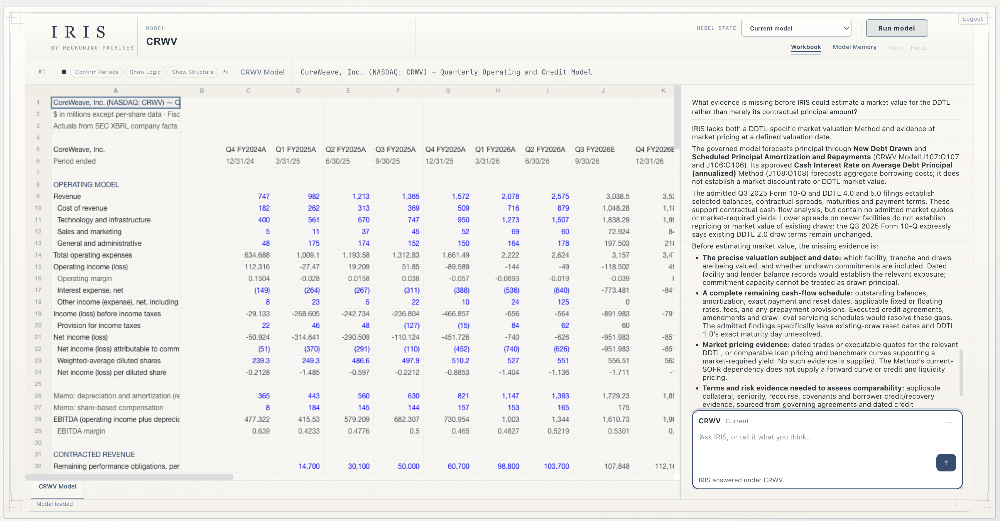
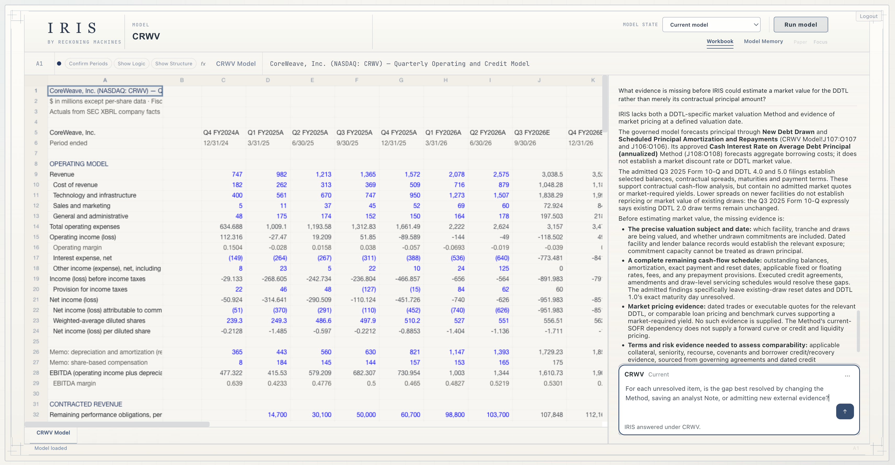

Case study / A worked IRIS inquiry
Where does AI-related debt exposure sit?
Start with CoreWeave (CRWV). Trace its financing obligations, ask who bears the exposure, and examine what would change its value. Each answer sets up the next question, from scheduled debt to the evidence an investment view would need.
A worked example from an earlier IRIS prototype. CoreWeave is not an offered Model Catalog entry.
Begin with what the model knows.
The inquiry starts with lease obligations, the cash interest rate forecast, delayed-draw term loan (DDTL) and OEM financing disclosures, undrawn borrowing capacity, and equity. It then asks whether the exposure can be connected to other companies in the book.
IRIS identifies a gap between forecasting contractual debt payments and estimating a DDTL's market value. A valuation still needs a defined loan and date, expected cash flows, market pricing, contractual terms, and credit-risk evidence. The analyst's next question asks which gaps call for a revised Method, a saved note, or new evidence.


The inquiry
Eleven questions, from obligations to an investment thesis.
The sequence shows how an analyst can move from what a company model schedules to what it cannot yet support.
Where the debt sits
- Which financing obligations does this model schedule explicitly, and which does it only name from the filings without a row?
- For the delayed-draw term loans, what committed, drawn and undrawn amounts does the available evidence establish, and as of what date?
- How does the model treat the OEM and software financing, and is any of it double-counted with the disclosed debt total?
- What does the model assume about lease liabilities versus lease payments, and where would a committed GPU lease show up?
Who bears it
- For DDTL 3.0, who is borrower, guarantor, arranger, disclosed lender and known current holder, and which of those roles has a date attached?
- Which of those lenders is a public company in the book, and what would be needed to connect this facility to that lender's model?
How its value changes
- What drives the cash interest rate assumption, and what happens to interest expense if SOFR moves 100 bp?
- Which obligations reprice with market rates and which are fixed, and does the model separate them?
- What would have to be true about revenue or utilization for the scheduled repayments to be covered from operations rather than refinancing?
Where the model is thin
- What evidence is missing before this model could support a mark on the DDTL, and which of those items are in the filings already available with the models?
- Which of the unknowns you named would a saved note or a revised approach to the estimate resolve, and which need new evidence?
Carry the conclusion forward. The inquiry does not change the model. The analyst decides what is worth keeping and saves it with the model, so a colleague can later start from the evidence, the interpretation, and the questions still open.